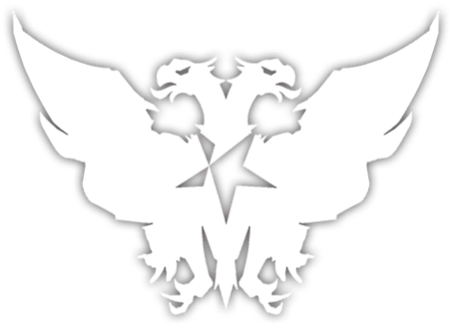

Arknights é um jogo chinês. Desenvolvido pela Hypergryph e Studio Montagne enquanto publicado pela Yostar, foi lançado na China em 2019 e mundialmente em janeiro de 2020 para dispositivos iOS e Android.
A jogabilidade principal é a de um jogo de defesa , com um grupo de personagens ("operadores") como torres. Os operadores são divididos em oito classes: vanguarda, guarda, defensor, especialista, médico, lançador, atirador e defensor. Operadores corpo a corpo podem ser colocados em ladrilhos retificados e operadores a distância em ladrilhos elevados. Operadores corpo a corpo impedem fisicamente os inimigos de avançarem, e operadores de longo alcance causam dano à distância ou curam operadores de corpo a corpo. Operadores especializados podem ser implantados em qualquer peça jogável. Os jogadores devem colocar os operadores nas peças corretas para impedir que o inimigo se infiltre na base do jogador.
1.Vanguardas
Local de implantação: Solo.
Embora sejam mais fracos que os Guards e Defenders, eles são os mais baratos e possuem habilidades de recuperação C (Uma Espécie de moeda que tem o valor de dar uma certa quantidade para por os seus operadores na batalha). Tornando-os uma boa escolha para a configuração inicial, pois eles ajudam muito na obtenção do Custo necessário para colocar o resto da equipe.
2.Guards
Local de implantação: Solo.
Os Guards são as principais unidades DPS corpo a corpo. Alguns guardas, como Frontstleaf, também têm ataques à distância.
3.Defenders
Local de implantação: Solo.
Os Defenders são bons em manter uma linha, mas tendem a não ser capazes de causar dano por conta própria (exceção notável: Hoshiguma), portanto, ter uma unidade DPS perto deles é geralmente uma obrigação.
4.Specialist
Local de implantação: Solo.
Os Specialists têm habilidades que não se enquadram em outras classes. Eles podem empurrar ou puxar o inimigo ou ter uma rápida recuperação. Eles também têm baixo custo.
5.Casters
Local de implantação: Terreno elevado.
Embora mais lentos que os Snipers, eles causam mais dano, especialmente contra inimigos blindados. Certos rodízios, como Ifrit, usam ataques AoE. Eles custam mais do que um lançador normal, mas podem danificar todos os que estão ao mesmo tempo.
6.Medics
Local de implantação: Terreno elevado.
Em vez de atacar o inimigo, eles curam qualquer unidade aliada dentro do alcance. Certos médicos, como Nightingale, têm uma cura AoE, para que possam curar todos os que estiverem ao mesmo tempo, em vez de um de cada vez.
7.Supporter
Local de implantação: Terreno elevado.
Os apoiadores não têm um tipo de ataque próprio, então eles imitam Snipers e Casters. Eles buffam o time ou debuff o inimigo.
8.Drones
Local de implantação: Solo ou Terreno elevado.
Esta classe é reservada para unidades implantáveis especiais, como as unidades de suporte de certos operadores (como o Tentacle da Deepcolor ou o drone de cura da Silence) ou paredes para alguns mapas.